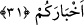

31. Andolsun biz sizi deneyeceğiz ki, içinizden cihâd edenleri, (güçlüklere)
sabredenleri bilelim ve söylediğiniz sözlerin (doğru olup olmadığını) sınayalım.
“Andolsun biz sizi,” durumunuzu bilmek değil bilakis bildirmek maksadıyla savaş
emri gibi ağır tekliflerle “deneyeceğiz” yahut azâbın izharında daha mânidâr olması
için size, sınayıp deneyenin muâmelesini yapacağız “ki içinizden cihâd edenleri,”
cihâdın güçlüklerine “sabredenleri” kendisine cezânın taalluk edeceği fiilî bir bilgiyle
“bilelim ve söylediğiniz sözlerin,” amellerinizden verilen haberlerin “(doğru olup
olmadığını) sınayalım” da onların güzel yahut çirkin oldukları ortaya çıksın. Çünkü
haber, haber verilenin durumuna göredir. Eğer haber verilen amel güzel olursa haber de
güzel olur. Şâyet haber verilen amel çirkin olursa haber de çirkin olur.
Âyet-i kerimede, “haberlerin denenip sınanması” ile “amellerin denenip
sınanması”na işâret edilmiştir.
Kâşifî şöyle demiştir: İman konusunda sizin söylediğiniz haberleri doğrulayan her şey
ortaya çıksın diye imtihan ederiz.
Fuzayl (r.a.) bu âyeti okuduğu zaman ağlar ve şöyle duâ ederdi: “Allahım, bizi
deneyip sınama. Zira sen bizi sınarsan bizim ayıplarımızı ızhâr eder ve bizi rezil
edersin.”
Burada şuna da işâret edilmektedir ki, sınama ve imtihan ateşiyle dostluğu afif ve
temiz olan hâlis olur.
Şöyle denilmiştir: Dostluk için belâ ve sınama, altın için alevli ateş gibidir. Zira
böyle ibtilâ ve sınamayla cevher adamlar ortaya çıkar. Neticede ihlâslı kişiler belli
olur. Hali ifşâ edilen münafık ise rezil olur. Dolayısıyla imtihan ve sınama anında kişi
ya ikrâm, tâzim ve saygıya mazhar olur yahut hakaret görüp aşağılanır.
Allah Teâlâ ezelden ebede kadar insan cevherlerinin özelliklerini bilir. Çünkü
mutluluk yahut sapıklık nitelikleri üzere o cevherleri yaratan Allah Teâlâ’dır. Nitekim
âyet-i kerimede, “Yaratan bilmez mi hiç? O latiftir (bilgisi her şeyin içine geçendir,
her şeyi) hakkıyla bilendir” (Mülk 67/14) buyrulur. Muhtelif zamanlarda bu
cevherlerin değişmesiyle Allah’ın ilmi değişmez. Allah onları tek bir halde görür.
Bütün hallerin değişmesi öyle olur ki, Allah’ı hiçbir hâl diğer halden meşgul etmez.
Dolayısıyla Allah kullarını, durumu onlara bildirmek ve işin hakikatini göstermek için
sınar.
Bazı büyükler şöyle demiştir: Diğer insanların delillerle bildiklerini ârifler görerek
bilirler. Yine hiç kimsenin delillerle idrak edemediğini ârifler delillerle bilirler.
Bununla beraber kendilerinin kendilerine şerrinden emin olmazlar. Öyle olunca
rablerinin mukadderâtından zuhûru kesecek hususlardan nasıl emin olabilirler ki!
Şeyh Abdulkadir Cîlî (k.s.): “Allah Teâlâ bana bir mekr, hile, belâ, musîbet
vermeyeceği hususunda otuz tane ahd ü misak verdi” dedi. Kendisine, “Peki bundan